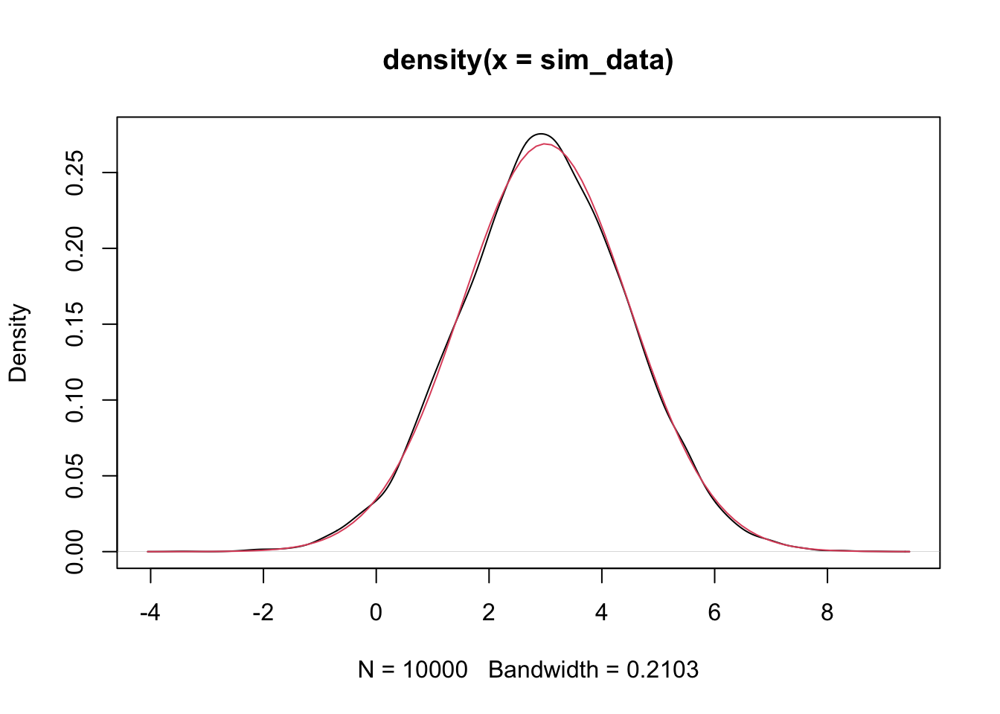
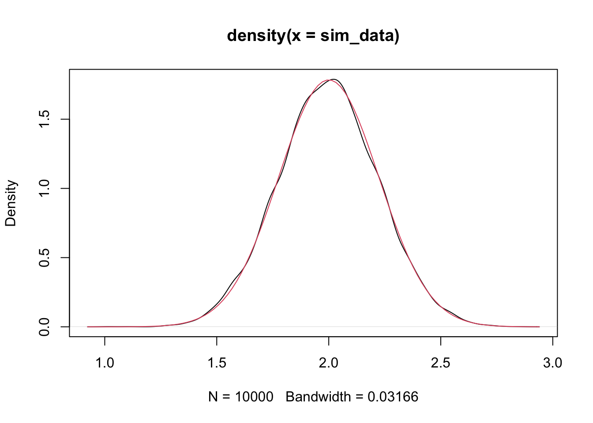
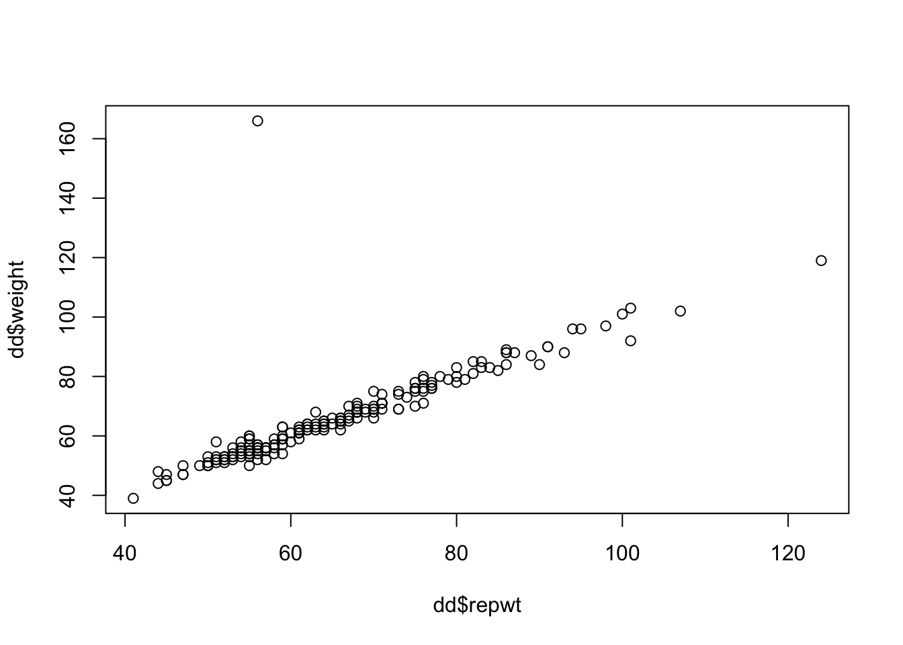
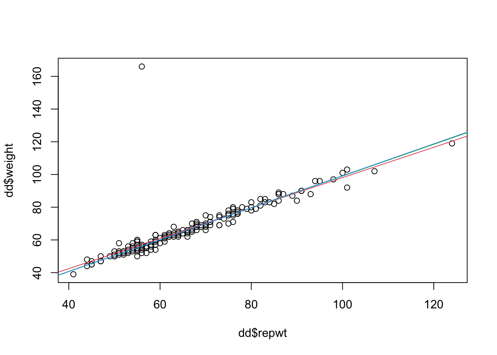
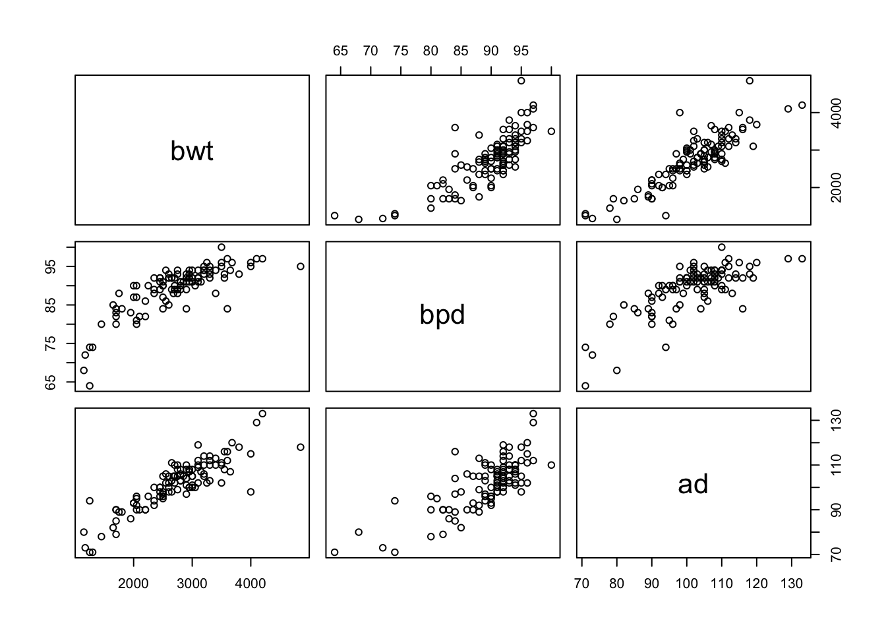
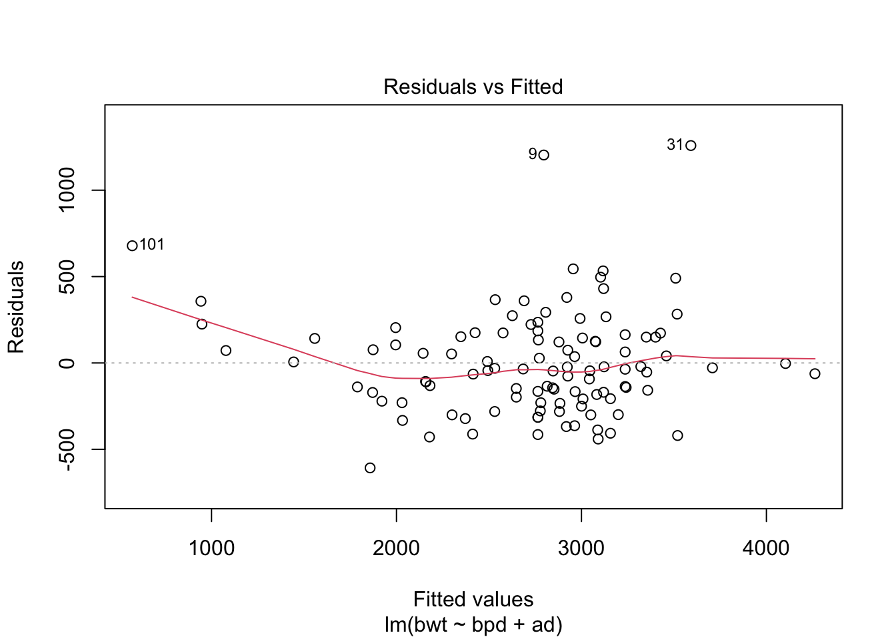
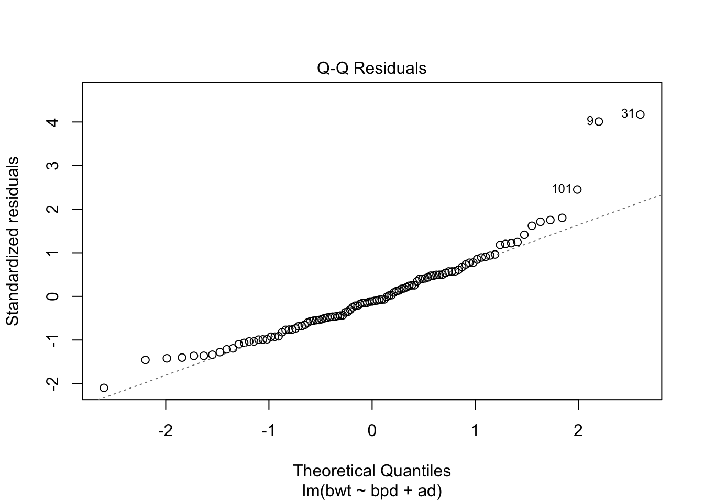
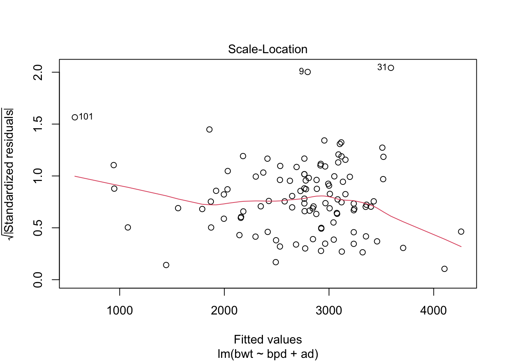
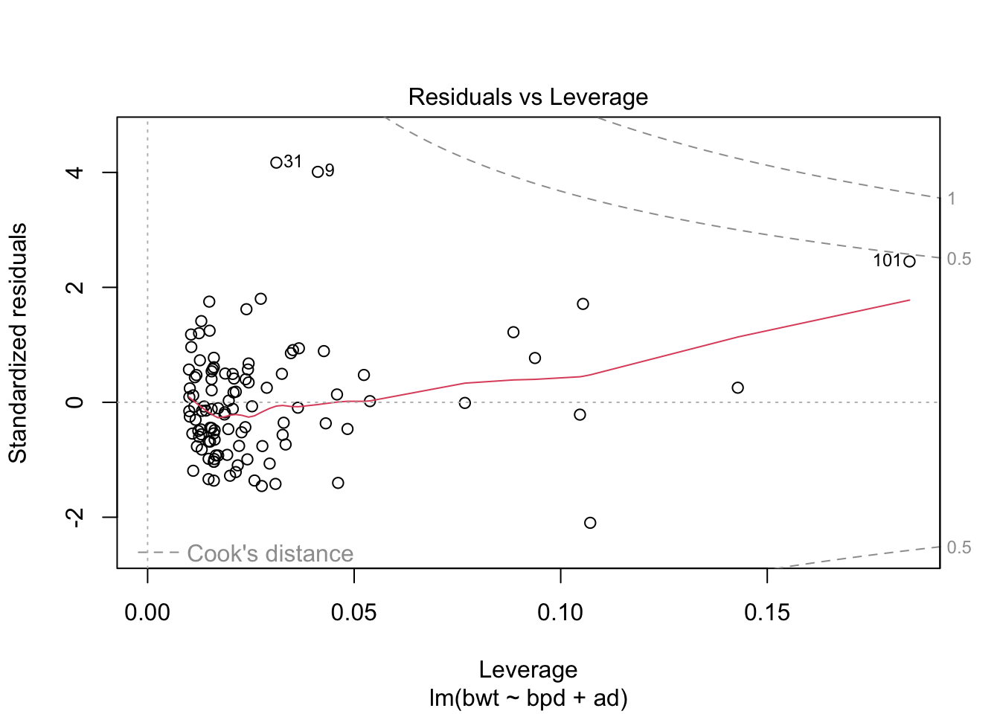
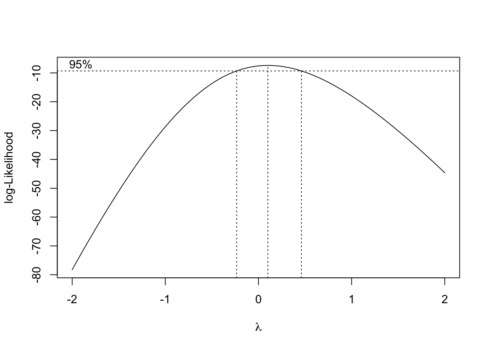

Chapter 10 Solutions
10.1 Chapter 2 Solutions
Exercise 2.1
We have that \(\overline{X}\) is normal with mean \(\overline{\mu}\) and variance \(\frac 1{25}\sum \sigma_i^2\), i.e. \(\overline{X} \sim N(3, \sigma^2 = 2.2)\).
To confirm this via simulations:
## [1] 2.982532## [1] 2.17417
Exercise 2.2
bp.obese <- ISwR::bp.obese
sse <- function(beta) {
sum((bp.obese$bp - (beta[1] + beta[2] * bp.obese$obese))^2)
}
optim(par = c(0,0), fn = sse)## $par
## [1] 96.80371 23.01824
##
## $value
## [1] 29845.55
##
## $counts
## function gradient
## 109 NA
##
## $convergence
## [1] 0
##
## $message
## NULLOur line of best fit is \(y = 96.8 + 23 x\). Confirm with lm:
##
## Call:
## lm(formula = bp ~ obese, data = bp.obese)
##
## Coefficients:
## (Intercept) obese
## 96.82 23.00For part (b), either answer is OK. The data seems pretty good to me, but I can see where some people didn’t think so. As long as you say why.
Exercise 2.3
Note that \(\sum_{i = 1}^n \beta_0 = n\beta_0\). The solution is \(\hat \beta_0 = \overline{y} - \overline{x}\).
\(\hat \beta_0\) is normal with mean \(\beta_0\) and variance \(\sigma^2/n\).
Let’s simulate.
xs <- runif(20, 0, 10)
sim_data <- replicate(10000, {
ys <- 2 + xs + rnorm(20, 0, 1)
mean(ys) - mean(xs)
})
plot(density(sim_data))
curve(dnorm(x, 2, 1/sqrt(20)), add = T, col = 2)
Exercise 2.4
We have that \[ \frac{\hat \beta_1 - \beta_1}{\sqrt{nS^2/(n\sum x_i^2 - (\sum x_i)^2)}} \sim t_{n -2} \] So we compute.
##
## Call:
## lm(formula = child ~ parent, data = dd)
##
## Residuals:
## Min 1Q Median 3Q Max
## -7.8050 -1.3661 0.0487 1.6339 5.9264
##
## Coefficients:
## Estimate Std. Error t value Pr(>|t|)
## (Intercept) 23.94153 2.81088 8.517 <2e-16 ***
## parent 0.64629 0.04114 15.711 <2e-16 ***
## ---
## Signif. codes: 0 '***' 0.001 '**' 0.01 '*' 0.05 '.' 0.1 ' ' 1
##
## Residual standard error: 2.239 on 926 degrees of freedom
## Multiple R-squared: 0.2105, Adjusted R-squared: 0.2096
## F-statistic: 246.8 on 1 and 926 DF, p-value: < 2.2e-16The estimate for \(S\) is given as 2.239, which we use. We compute the test statistic:
## [1] -8.596837The test statistic is -8.596837. We need to compute the likelihood of obtaining something that unlikely given that \(H_0\) is true.
## [1] 3.454205e-17With this \(p\)-value, we reject the null hypothesis. We conlcude that the slope is not 1. With more work, we can see that this means (roughly) that parents who are short or tall will tend to have children that are again short or tall, but less so than the parents. Does that mean that eventually there will be little variation among heights of humans. Why or why not?
Exercise 2.5
An unbiased estimator for \(S^2\) is \[ \frac{1}{n-1} \sum_{ i = 1}^n \bigl(y_i - \hat\beta_0 - x_i\bigr)^2 \]
Standard normal.
\(t\) with \(n-1\) degrees of freedom.
beta_0 <- mean(dd$ys) - mean(dd$xs)
s <- sqrt(1/(nrow(dd) - 1) * sum((dd$ys - beta_0 - dd$xs)^2))
test_stat <- (beta_0 - 2)/(s/sqrt(nrow(dd)))
test_stat## [1] 2.386556## [1] 0.03167356Note that this is the same as a paired \(t\)-test, where we have as our null hypothesis that \(y_i - x_i\) is normal with mean 2 and unknown standard deviation.
##
## Paired t-test
##
## data: dd$ys and dd$xs
## t = 2.3866, df = 14, p-value = 0.03167
## alternative hypothesis: true mean difference is not equal to 2
## 95 percent confidence interval:
## 2.121984 4.286277
## sample estimates:
## mean difference
## 3.204131Exercise 2.6

mod_lm <- lm(weight ~ repwt, data = dd)
mod_huber <- MASS::rlm(weight ~ repwt, data = dd, psi = MASS::psi.huber)
mod_tukey <- MASS::rlm(weight ~ repwt, data = dd, psi = MASS::psi.bisquare)
plot(dd$repwt, dd$weight)
abline(mod_lm, col = 2) #red
abline(mod_huber, col = 3) #green
abline(mod_tukey, col = 4) #blue
10.2 Chapter 3 Solutions
- Let’s load the data.

##
## Call:
## lm(formula = bwt ~ bpd + ad, data = secher)
##
## Residuals:
## Min 1Q Median 3Q Max
## -607.44 -202.27 -34.89 150.80 1258.45
##
## Coefficients:
## Estimate Std. Error t value Pr(>|t|)
## (Intercept) -4628.118 455.990 -10.150 < 2e-16 ***
## bpd 37.133 7.615 4.876 3.90e-06 ***
## ad 39.763 4.164 9.549 6.84e-16 ***
## ---
## Signif. codes: 0 '***' 0.001 '**' 0.01 '*' 0.05 '.' 0.1 ' ' 1
##
## Residual standard error: 306.6 on 104 degrees of freedom
## Multiple R-squared: 0.8065, Adjusted R-squared: 0.8028
## F-statistic: 216.7 on 2 and 104 DF, p-value: < 2.2e-16Looks like a pretty good model already. Let’s check the diagnostics.




Could be some skewness there. Let’s see if a transformation might help the normality of the residuals.

This suggests a log transform of the response would improve the normality of the residuals. Finally, let’s put no back in to the model. We hope that it is not strongly significant, as that might be an indicator of some sort of experimental flaw.
##
## Call:
## lm(formula = bwt ~ ., data = secher)
##
## Residuals:
## Min 1Q Median 3Q Max
## -640.21 -191.24 -44.58 151.67 1241.13
##
## Coefficients:
## Estimate Std. Error t value Pr(>|t|)
## (Intercept) -4473.1332 488.7640 -9.152 5.67e-15 ***
## bpd 35.5178 7.8374 4.532 1.58e-05 ***
## ad 40.1286 4.1885 9.581 6.34e-16 ***
## no -0.8824 0.9949 -0.887 0.377
## ---
## Signif. codes: 0 '***' 0.001 '**' 0.01 '*' 0.05 '.' 0.1 ' ' 1
##
## Residual standard error: 306.9 on 103 degrees of freedom
## Multiple R-squared: 0.808, Adjusted R-squared: 0.8024
## F-statistic: 144.4 on 3 and 103 DF, p-value: < 2.2e-16Note that no is not significant, and the Adjusted R-squared decreased. Both of these are what we would like to see.
10.3 Chapter 5
- Let’s load the data.
The problem asks us to do an initial test/train split and work with the train data from there on out. I’ll pull out the test data and leave the train data with the same variable name.
test_indices <- sample(1:176, 46)
test_dat <- ChemicalManufacturingProcess[test_indices,]
ChemicalManufacturingProcess <- ChemicalManufacturingProcess[-test_indices,]The data isn’t in the format that the book said it would be in. Let’s create a matrix of predictors and a vector response, in addition to the data frame with both.
Now let’s see about missing data.
## [1] 88We do have missing data, so we will need to preprocess. The first part of the problem asks us to do Principle Component Regression. Let’s do it using the caret package.
## Loading required package: ggplot2## Loading required package: latticetrain(x = predictors,
y = response,
method = "pcr",
preProcess = c("center", "scale", "medianImpute", "nzv"))## Principal Component Analysis
##
## 130 samples
## 57 predictor
##
## Pre-processing: centered (56), scaled (56), median imputation (56), remove (1)
## Resampling: Bootstrapped (25 reps)
## Summary of sample sizes: 130, 130, 130, 130, 130, 130, ...
## Resampling results across tuning parameters:
##
## ncomp RMSE Rsquared MAE
## 1 1.923932 0.2143977 1.453886
## 2 1.931708 0.2811579 1.376702
## 3 2.100334 0.2650185 1.393008
##
## RMSE was used to select the optimal model using the smallest value.
## The final value used for the model was ncomp = 1.I think we need to expand our tune grid a bit.
tuneGrid <- data.frame(ncomp = 1:20)
pca_mod <- train(x = predictors,
y = response,
method = "pcr",
tuneGrid = tuneGrid,
preProcess = c("center", "scale", "medianImpute", "nzv"))
apply(pca_mod$results[,c(2, 5)], 1, sum)## 1 2 3 4 5 6 7 8
## 2.538925 2.217215 2.620412 2.848612 3.369809 3.308128 3.522237 3.580313
## 9 10 11 12 13 14 15 16
## 3.180316 3.338443 3.340587 3.059151 3.000264 2.828649 2.497024 2.321957
## 17 18 19 20
## 2.285783 2.486719 2.498090 2.882467The smallest value 1 se away from the estimated MSE is 2.2172154. So, by our one se rule of them, we will choose
ncomp <- which(pca_mod$results[,2] < min(apply(pca_mod$results[,c(2, 5)], 1, sum)))
ncomp <- min(ncomp)
ncomp## [1] 1This says that we need one component, and our estimate for the MSE is roughly \(2.1 \pm .92\).
## [1] 2.07493## [1] 0.4639948Let’s check it out on our test set that we haven’t touched yet. We first have to apply the same pre-processing steps to the test data as we did to the train data.
preprocess_mod <- preProcess(predictors,
method = c("scale", "center", "medianImpute", "nzv"))
test_predictors <- test_dat[,-1]
test_response <- test_dat[,1]
test_processed <- predict(preprocess_mod, newdata = test_predictors)Now we can predict the outcomes on the test set.
## 117 133 96 102 169 20 55 146
## 39.93165 39.74174 40.10136 39.30054 41.14235 41.81163 40.79884 39.44937
## 37 110 94 73 88 115 123 157
## 40.45314 39.15261 40.59883 40.08035 39.65718 39.45967 39.87382 39.39827
## 35 57 176 49 164 158 70 138
## 40.92926 40.33136 41.02257 41.98764 39.31417 39.31910 40.22380 38.95523
## 80 132 95 121 153 11 98 105
## 40.32705 40.15179 40.18415 38.89349 39.57619 41.29336 40.03982 39.59950
## 114 23 26 77 118 76 66 51
## 39.88256 40.17518 40.30996 40.18995 39.22107 40.53561 40.15405 40.77907
## 54 68 60 100 17 109
## 40.39532 40.30252 40.63361 39.44431 41.76909 39.70861errors <- predict(pca_mod$finalModel, newdata = test_processed, ncomp = 1)[,,1] - test_response
mean(errors^2)## [1] 2.621208This value is within 2 se of the predicted value based on CV.